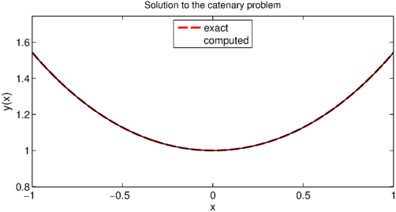

FS = 'fontsize'; LW = 'linewidth';
Suppose we wish to solve a classical problem from the calculus of variations of the form
$$ \min_{y(t)} J[y] \equiv \int_{-1}^1 f(t,y,y') dt $$
subject to the boundary conditions
$$ y(-1) = \alpha, \quad y(1) = \beta. $$
Problems like this arise in physics, for example, when $J$ is an energy functional.
A standard example of a variational problem is the catenary problem, which is to determine the shape of a hanging rope. In this case $J$ is an energy functional taking the form [1]
$$ J[y] = \int f(t,y,y') dt = \int y \sqrt{1 + (y')^2} dt. $$
To solve this problem with Chebfun, we begin with the functional and boundary conditions. We will choose boundary conditions that make it easy to verify the known solution.
f = @(y,yp) y .* sqrt(1 + yp.^2); J = @(y) sum( f(y, diff(y)) ); alpha = cosh(1); beta = cosh(1);
Since the problem is nonlinear, we will need to solve it iteratively. As an initial guess to the iteration we'll choose a simple line, and note its functional value.
dom = [-1,1]; y0 = chebfun([alpha, beta]', dom); startJ = J(y0)
startJ = 3.086161269630488
The simplest way to compute extrema of the functional $J[y]$ is to find solutions of the Euler-Lagrange equation
$$ \frac{\partial f}{\partial u} - \frac{d}{dx}\frac{\partial f}{\partial (u')} = 0. $$
To do so we must compute the first variations of the function $f$,
$$ \frac{\partial f}{\partial u}, \quad \frac{\partial f}{\partial u'}. $$
Using only information about first variations, we could implement a steepest descent method. However, if can also get our hands on the second variations of $f$, then we could implement a more efficient Newton method. The second- variation equivalent of the Euler-Lagrange equation, sometimes called Jacobi's accessory equation, is
$$ \frac{d}{dx}\Big(\frac{\partial^2 f}{\partial(u')^2}\Big) + \Big(\frac{d}{dx}\frac{\partial^2 f}{\partial u \partial u'}- \frac{\partial^2 f}{\partial u^2}\Big)u = 0. $$
To find the first and second variations, we will use Chebfun2. First we make a chebfun2 of $f$.
dom2 = [1 2 -2 4]; F = chebfun2(f, dom2);
Now we can compute the first and second variations of $f(y,y')$ by taking derivatives of F: each diff(F,[a b]) is a chebfun2 corresponding to
$$ \frac{\partial^{(a+b)} f}{\partial^a (u) \partial^b (u')}. $$
F1 = diff(F, [1 0]); F2 = diff(F, [0 1]); F11 = diff(F, [2 0]); F12 = diff(F, [1 1]); F22 = diff(F, [0 2]);
Now we are able to compute, say $\partial f(y,y')/\partial u$ for a particular function $y$ by writing F1(y,diff(y)) for a chebfun y.
The iteration will take Newton steps by solving the accessory equation. Five iterations are enough to get an accurate solution.
y = y0;
pref = cheboppref;
pref.plotting = 'off';
pref.display = 'none';
for k = 1:5
% The first and second variations of f.
yp = diff(y);
f1 = F1(y, yp);
f2 = F2(y, yp);
f11 = F11(y, yp);
f12 = F12(y, yp);
f22 = F22(y, yp);
% Compute the next Newton step by solving the accessory equation.
N = chebop( @(x,u) diff(f22.*diff(u)) + (diff(f12)-f11).*u, dom );
N.lbc = 0;
N.rbc = 0;
u = solvebvp(N, (f1-diff(f2)), pref);
% Increment by the step.
y = y + u;
% Print out the current value of the energy functional.
nextJ = J(y)
end
nextJ = 2.840828750691848 nextJ = 2.816226754422265 nextJ = 2.813551498179433 nextJ = 2.813430779819848 nextJ = 2.813430203941194
The exact solution is a simple $\cosh$. Here is the error in our solution.
y_exact = chebfun('cosh(x)', dom);
norm(y - y_exact)
ans =
7.515155566381136e-06
And the values of the energy functional:
fprintf('\n final J[y]: %.16f\n', J(y))
fprintf('optimal J[y]: %.16f\n', J(y_exact))
final J[y]: 2.8134302039411945 optimal J[y]: 2.8134302039235086
Finally, a plot of the catenary:
plot(y_exact, 'r--', LW,2), hold on
plot(y, 'k-', LW,1)
axis equal
title('Solution to the catenary problem', FS, 12)
xlabel('x', FS, 14), ylabel('y(x)', FS, 14)
legend('exact','computed','location','north')

References
- Charles Fox, An Introduction to the Calculus of Variations, Courier Dover Publications, 1987.